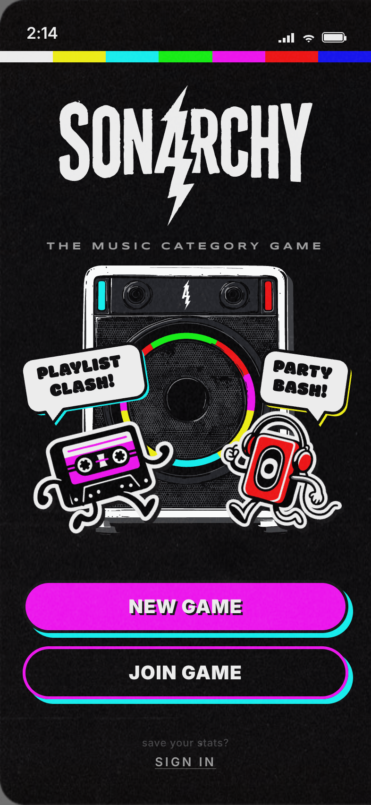
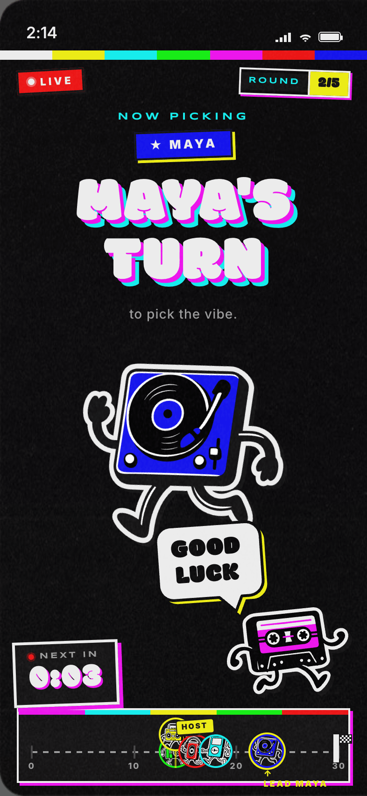
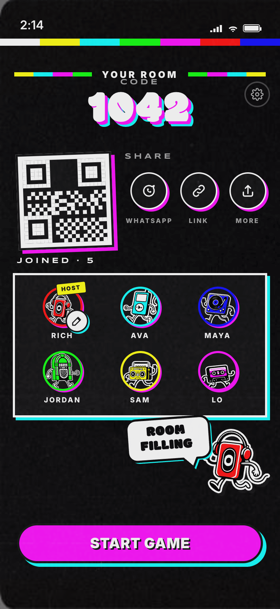
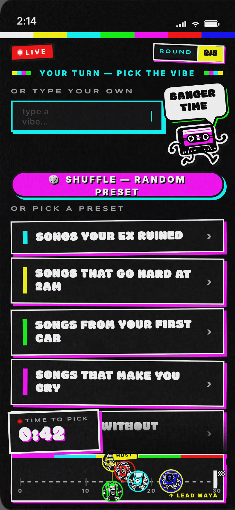
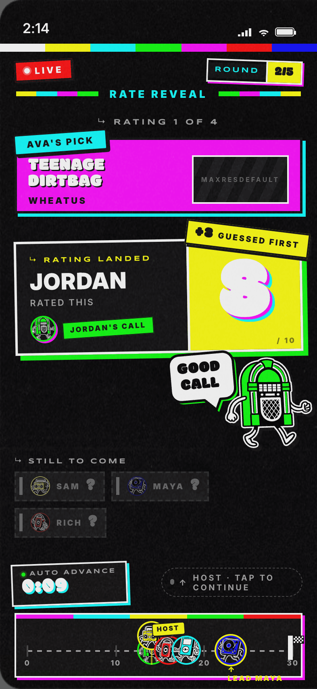
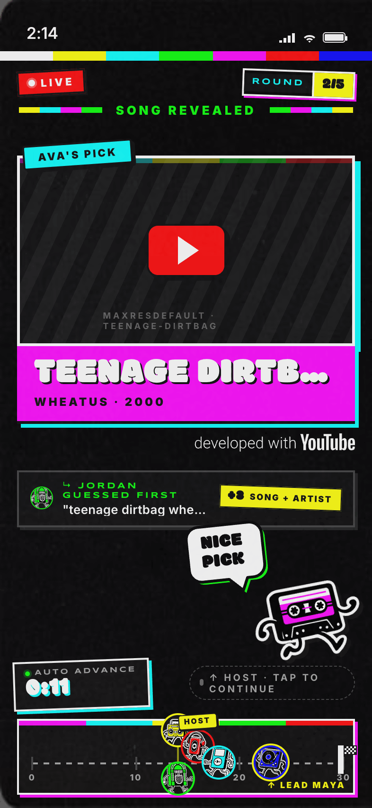
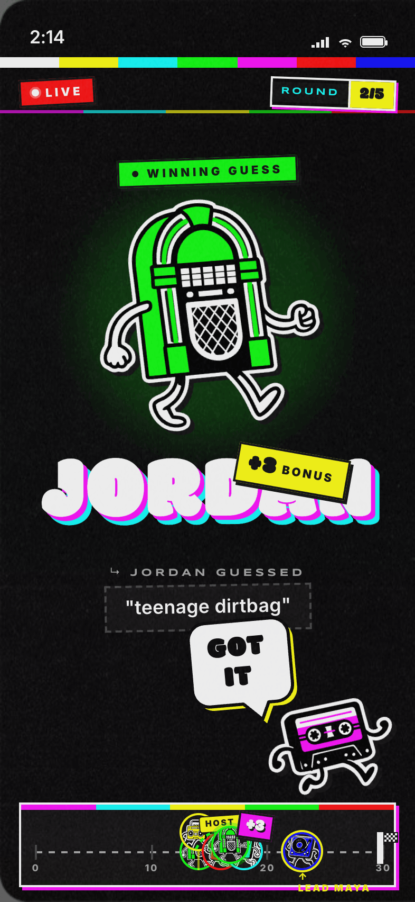
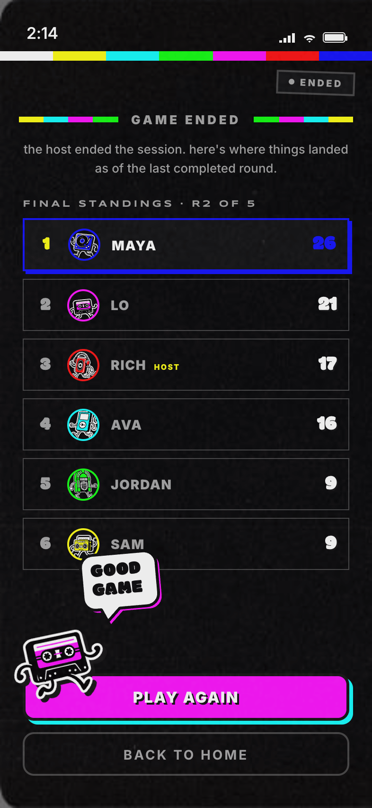

It started around a table
Sonarchy began as a family game. Drinks, food, a Bluetooth speaker outside, everyone digging through Spotify on their phones. Someone would call a category, love songs, songs to cry to, songs that should never have been hits, and we'd take turns playing our picks. Then the argument.
The fun was never the music. It was the gaps. My parents' love songs were never going to match the grandkids' picks, and the cheesy ones landed differently depending on who was at the table. Three generations, one speaker, and a running dispute about taste. That collision is the whole game.
When I did an AI course in TU Dublin and started building apps, the family game was the obvious thing to try and make real. So I did. Twice, as it turned out.
One device plays the music. Everyone else picks, guesses and rates from their own phone. The same shape as the kitchen table, with timers and a scoreboard bolted on.


v1: I designed screens before I understood the system
I did what a designer does. I designed it in Figma first, screen by screen, and it looked great. Then I built it, put real phones in real hands, and watched a room play. The core was right. People got loud, argued over scores, queued the next track before the last one finished. And the first test broke three of my assumptions in about twenty minutes.
Showing the video to everyone pulled the room out of the game; people watched the screen instead of each other. The guessing had quietly disappeared, so the best bit of the table version needed a workaround. And scoring by dragging songs onto a leaderboard was precise, fiddly, and nobody enjoyed it. On top of that the host was fumbling between playing music and running the game, and the score reveal, the loudest moment at the table, passed in silence.
None of that was a visual problem. It was a system problem. There was no product spec and no technical spec, just screens. And the constraints that actually shape this game had never been written down: the host's phone plays the audio, so it can't hide the song from whoever's holding it. It streams from YouTube, so their rules decide what's allowed. It pipes sound over Bluetooth, so latency is a fact, not a bug. One phone is the jukebox, the screen, the referee and the source of truth, and half of its limits aren't mine to change.
Three jobs, one device. The hardest isn't a feature, it's keeping the game fair when the host is holding the answer. v1 never asked the question.
v2: keep the idea, bin the code, write it down first
The call was easy to make and hard to do. v1 had proved the game and the build couldn't carry it. So I kept the idea, threw away every line of code, and spent three weeks writing before I opened an editor: a product spec, a technical spec, scoring rules, playback gating, what happens when a song won't play and someone has to re-pick.
The most useful thing in those documents was an ordering. Rather than design the game and bolt the constraints on after, I ranked them and let the ranking settle every argument that came later. YouTube's terms first, because breaking them ends the product, not a feature. Audio and speaker physics second, because no clever mechanic survives half a second of Bluetooth lag. Fairness third, not because it matters least, but because it's the one I fully control, so it bends to fit the other two.
Design the party around the phone's limits instead of fighting them. And plan the system before you push pixels.
YouTube compliance
Search, playback and quota all run inside YouTube's terms. A cached search layer keeps usage low; nothing reaches the room that shouldn't.
Audio & Bluetooth physics
The host phone is the audio source. Timing is anchored to the device, not a server clock, so the speaker and the screen stay in sync even when the network drifts.
Fairness
The host sees the title, so the host never guesses. Scoring and reveals are built so the game can't be quietly gamed.
Casey and Walker run the room
A party game needs a host, and in v1 the host was me, half-watching the phone. In v2 the game has two of its own. Casey is a pink cassette, scrappy, picks fights. Walker is a green walkman, drier, the straight man. They open each round, narrate the guesses, and reveal who rated what, so the person holding the phone gets to be at the party too.
They only ever speak in two words, in caps. ENORMOUS BETRAYAL. BOLD CHOICE. Two words is what you can read across a loud room while someone's shouting the wrong answer. The round, in six beats:
Pick a category
Casey and Walker tee up the round.
A song plays
Through the speaker, host phone driving it.
Guess it
Everyone but the host races to name the track.
Rate it
One to ten, on a slider built for thumbs, not a ranked list.
The reveal
Scores come back attributed, character by character. The loudest beat in the game.
The leaderboard
A running timeline told through the characters, not a spreadsheet.
Each of v1's three broken assumptions has a fix in that list. The leaderboard drag became a 1 to 10 slider, one thumb, richer signal. A guess phase went back in before the rating, so the room commits before it judges. And the reveal stopped being a quiet number and became a hosted, attributed moment: you see exactly who gave you a four, and Casey has an opinion about it. That's the argument from the kitchen table, put back where it belongs.






I design it. Claude builds it. The rig checks it.
I'm not hiding how this got built. The design calls, the product decisions, the copy and the SMPTE-yellow obsession are mine. The code and the architecture were built with Claude, argued out against a spec I'd written first. That partnership is the reason a solo designer could ship a realtime multiplayer game at all, and it's also why I'm careful about it: AI makes code cheap, and cheap code is a liability unless something is checking it.
So the third member of the team is the rig. Around 1,100 automated checks run on every pass, Playwright across three browsers and five devices, catching the things both of us had stopped seeing. Under all of it is a state machine, lobby → category → play → guess → rate → reveal → leaderboard, driven by Supabase Realtime so every phone in the room turns over together. Clients read only; every write goes through a locked server function, so scores and the answer can't be lifted from a phone or faked from the network tab. Integrity lives in the architecture, not in hope.
The non-obvious calls
The host never guesses
The host's phone plays the audio, so it sees the title. Fairness falls out of who's holding the jukebox, not a rule bolted on.
A slider, not a ranking
One to ten reads instantly and moves with one thumb. Ranking everyone's songs was precise, and nobody enjoyed it.
Throw the code away
v1 worked well enough to patch. Patching would have carried its discovery debt into every later feature. Three weeks of writing was cheaper than a year of workarounds.
Say how it was built
The about page says AI wrote most of the code. Hiding that would be dishonest and, worse, it would hide the actual skill: knowing what to ask for, and what to reject.
Tests see properties. People see the screen.
The lesson v1 kept teaching: the room is the product, not the interface. The best Sonarchy isn't the one with the most features, it's the one where a phone, a speaker and six people can be loud together without the game getting in the way. I only learned that by watching a room, and I only fixed it by stopping and writing the system down.
The other lesson is about the tools. AI raised the ceiling on what I could build alone. It did nothing for the floor. The rig passes and the room still goes quiet at the wrong moment, because tests check properties and people look at screens. Someone still has to sit at the table.
Plan the system before you push pixels
Beautiful screens on top of an unwritten system is how v1 happened. Spec first is now a rule, not a preference.
Order your constraints
Naming what comes first, YouTube, physics, fairness, made every later decision faster and less arguable.
The seams are the work
v1's "small" friction was the whole game. Fixing the reveal, the rating and the host's job was the rebuild.
Come break my game
It's live on the App Store and the web. I'm running play-test rooms of five to ten people ahead of a bigger hosted night, and I want the rooms I haven't thought of.
More of the cast
The six characters are a system, not a set. There's room to grow the show.